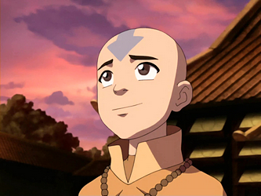

El Avatar Aang era un Nómada Aire nacido en el 12 del AG y el Avatar durante el conflicto de un siglo de duración conocido como la Guerra de los Cien Años. Su predecesor inmediato era el Avatar Roku, y su sucesor inmediato es el Avatar Korra.
Nacionalidad:
Templo del Aire del Sur
Templo del Aire del Sur
Preosesión:
Avatar
Avatar